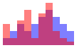
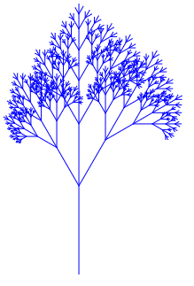

Вооружившись знаниями о моноидах построим гибкую и расширяемую систему для вывода графики, использующую web-интерфейс. Наша система будет представлять собой небольшой встроенный предметно-ориентированный язык (EDSL) для декларативного описания графики. Этот язык будет трансливаться в формат SVG (Scalable Vector Graphics). Это текстовый формат, используемый веб-браузерами и многими векторными графическими редакторами (
Определим типы для представления некоторых графических примитивов: точек, ломаных линий.
type Pt = (Float, Float) data Primitive = Point Pt | Line [Pt] deriving Show
В формате SVG наши примитивы представляются в виде строк:
"<circle rx='x' ry='y' r='1'/>"
"<polyline points='x1,y1 x2,y2 ...'/>"
format для форматирования строк по шаблону, последовательно заменяя символ '_' строками из списка. Например:
Подсказка: воспользуйтесь функциейMain> format "_ said: '_!'" ["John", "Hello"] "John said: 'Hello!'"
splitOn из модуля Data.List.Split для того, чтобы разбить форматируемую строку на части, а потом с помощью функции zipWith перемешайте эти части со строками из списка.
Определим собственный класс для того, что может быть экспортировано в SVG:
class SVG a where toSVG :: a -> String
Primitive:
instance SVG Primitive where toSVG (Point (x,y)) = _ toSVG (Line pts) = _
Сами примитивы ещё не образуют полноценного изображения. Для того, чтобы можно было увидеть картинку, нужно объединить примитивы в такую структуру:
"<svg width='_' height='_' fill='none' stroke='black'> примитив примитив ... </svg>"Здесь аттрибуты width и height задают размеры изображения. Сохранив этот текст в файл с расширением .html можно будет увидеть изображение в веб-браузере.
Для представления картинки определим новый тип Picture:
Здесьdata Picture = Picture BoundingBox [Primitive] deriving Show type Box = ( Min Float, Max Float , Min Float, Max Float ) instance Bounded Float where minBound = -1000 maxBound = 1000
Box хранит координаты "рамки", обрамляющей изображения. Чтобы сделать тип Box моноидом, определим минимальное и максимальное допустимое значение координат, соответственно, -1000 и 1000 используя экземпляр класса Bounded для типа Float.
findBox :: Primitive -> Box, вычисляющую обрамляющие координаты для примитивов.SVG для типа Picture и два конструктора line :: [Pt] -> Picture и point :: Pt -> Picture, которые бы вычисляли обрамляющие координаты для примитивов.
writeFile и убедитесь в том, что изображение открывается в браузере. Сознайте вспомогательную функцию writeSVG :: SVG a => FileName -> a -> IO ().polygonдля правильных многоугольников заданного размера (размер задаётся радусом описанной окружности).circle для окружности, представляемой двадцатигранником.square для квадрата.Monoid для типа Picture. Создайте избражение, показанное на рисунке:
Воспользуемся тем, что мы научились перемножать матрицы для преобразования изображений. Существует класс преобразований плоскости, называемый афинными, при котором параллельные прямые переходят в параллельные прямые, пересекающиеся в пересекающиеся, скрещивающиеся в скрещивающиеся. К ним относятся движения: сдвиги и повороты, и преобразования подобия.
Любое афинное преобразование вектора
scaleT a b
translateT x y
rotateT alpha
affine :: M Float -> Primitive -> Primitive
transform :: M Float -> Picture -> Picture
scale :: Float -> Float -> Picture -> Picture
shift :: Float -> Float -> Picture -> Picture
rotate :: Float -> Picture -> Picture
let s = square 50 s <> rotate (pi/2) s s <> shift 10 30 s s <> scale 2 3 s s <> (scale 2 3 . rotate (pi/3)) s (shift 20 30 <> rotate (pi/3)) s
polygon и circle, а также ограничиться только размерами при конструировании квадрата и прямоугольника. Упростите определения этих конструкторов и введите простой оператор at, с помощью которого можно было бы описать окружность со вписанным в неё квадратом, расположеные в координатах (100, 100) так:
(circle 50 <> rectangle 50 50) `at` (100,100)
Picture содержит в себе информацию об области, обрамляющей изображение, и эту информацию можно использовать для приведения всех координат изображения в видимую область положительных координат. Измените определение функции toSVG для типа Picture так, чтобы перед выводом ось ординат направлялась вверх, а минимальные координаты изображения перемещались в начало координат.mconcat $ take 48 $ iterate (rotate (pi/24)) $ square 50 `at` (25,25)
above и beside. Напишите их определение так, чтобы при результаты были тками, как показано на рисунке:
circle 30 `beside` square 40
circle 30 `above` square 40
row и column, которые располагали бы список изображений в виде ряда или колонки. Например так:
row $ circle <$> [20,40,80,160,80,40,20]
chart :: Picture -> [Int] -> Picture, которая строила бы диаграммы для списков целочисленных значений, как показано на примере:
chart (square 10) [1,2,1,2,3,2,1,4,2,3,6,5,4,3,4,3,1,2,1]
barChart :: Double -> [Double] -> Picture, которая строила бы столбчатую диаграмму для числовых списков, используя указанную ширину столбца:
scale 1 10 $ barChart 10 [1,2,3,2,3,4,5,4,3,2]
Primitive новый конструктор Group Attribute [Primitive], задающий группу примитивов и атрибут, такой как цвет линии, заливки и т.д. для этой группы. Тип Attribute зададим так:
Для этого типа определите экземпляр классаdata Attribute = Color String | Fill String | LineWidth Float | Opacity Float deriving Show
toSVG. Перечисленные нами атрибуты в SVG задаются следующим образом:
color :: String -> Picture -> Picture fill :: String -> Picture -> Picture lineWidth :: Float -> Picture -> Picture opacity :: Float -> Picture -> Picture
charts = opacity 0.5 (fill "blue" chart1 <> fill "red" chart2) where chart1 = barChart 10 [10,20,30,20,30,40,50,40,30,20] chart2 = barChart 10 [30,10,35,50,10,45,60,20,10,5]

fractal :: Foldable t => t (M Float) -> Int -> Picture -> Picture fractal model n = mconcat . take n . iterate (foldMap transform model) tree = fractal model 7 $ line [(0,0), (0,100)] where model = [ shiftT 0 100 <> scaleT 0.6 0.6 <> rotateT (-pi/6) , shiftT 0 100 <> scaleT 0.7 0.7 , shiftT 0 100 <> scaleT 0.5 0.5 <> rotateT (pi/6)]

Постройте ряд, показывающий рост "дерева" по мере увеличения числа поколений.circles = fractal model 8 $ circle 150 where model = [ shiftT 0 75 <> scaleT 0.5 0.5 <> rotateT (pi/3) , shiftT 0 (-75) <> scaleT 0.5 0.5 <> rotateT (-pi/3) ] pithagor = fractal model 10 $ square 100 where model = [ shiftT 0 100 <> scaleT s s <> rotateT (pi/4) , shiftT 100 100 <> scaleT s s <> rotateT (-pi/4)] s = 1/sqrt 2